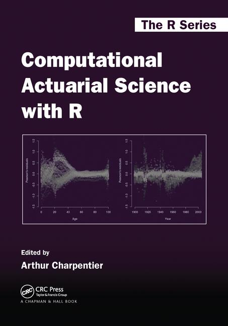

01 de abril de 2022
O objetivo do curso é apresentar uma série de funções e aplicações computacionais presentes no dia a dia de trabalho de um atuário e profissionais que venham a trabalhar com cálculo de risco.
O curso vai abordar tópicos básicos de manipulação e análise de bases de dados no R, juntamente com as principais funções para aplicações de cálculos de risco, matemática atuarial e tarifação de seguros.
Pré-requisitos: Técnicas Atuariais I
Site: http://www.est.ufmg.br/~thaispaiva/Disciplinas/2022_1/MetComp/
Moodle: Turma TOPICOS ESPECIAIS EM ATUARIA - TA

| Atividade | Nota |
|---|---|
| Participação | 10 pts |
| Listas semanais | 50 pts |
| Trabalho Final | 40 pts |
R é um software livre e open-source.
Isso faz com que o R possa ser instalado gratuitamente na maioria dos computadores e servidores.
Por ser independente do sistema operacional e open-source, é a linguagem ideal para pesquisa reproduzível.
E porque atuários devem usar o R?
Para ilustrar a importância de métodos computacionais para atuária, vamos considerar um exemplo:
Suponha que você precise calcular o quantil 99,5% de uma soma aleatória de indenizações (popular entre atuários que precisam calcular Value-at-Risk).
Do ponto de vista probabilístico, precisamos encontrar, para todo \(s \in \mathbb{R}\):
\[ F(s) = \mathbb{P}(S \leq s), \mbox{ onde }\,\, S = \sum_{i=1}^N X_i \]
\[ F(s) = \sum_{n=0}^{\infty} F_X^{*n}(s) \,.\, \mathbb{P}(N=n) \]
# fixar a semente set.seed(1) # gerar uma amostra de tamanho 200 X = rexp(200, rate=1/100) head(X)
## [1] 75.51818 118.16428 14.57067 13.97953 43.60686 289.49685
mean(X)
## [1] 99.99842
Vamos estimar a distribuição dos \(X_i's\).
Uma distribuição razoável para indenizações é a Gama(\(\alpha\),\(\beta\)).
# equação em função de x=alfa
f = function(x){
log(x) - digamma(x) - log(mean(X)) + mean(log(X))
}
# encontrar a raiz da equação
alpha = uniroot(f, interval = c(1e-8,1e8))$root
alpha # estimador para alfa
## [1] 1.308995
beta = alpha/mean(X) # estimador para beta beta
## [1] 0.01309016
\[X_i \sim Gamma (\hat{\alpha}, \hat{\beta}) \]
\[ F(s) = \mathbb{P}(S \leq s) = \sum_{n=0}^{\infty} F_{X}^{*n}(s) \,.\, \mathbb{P}(N=n) \]
# função da distribuição acumulada de S
F = function(x, lambda=100, nmax=1000){
n = 0:nmax
return( sum(pgamma(x, n*alpha, beta)*dpois(n, lambda)) )
}
# encontrando o quantil .995 uniroot(function(x) F(x)-.995, c(1e-8,1e8) )$root
## [1] 13654.43
\[\mathbb{P} \left( S = \sum_{i=1}^N X_i \leq 13654.43 \right) = 0.995 \]
Repetir o exemplo da aula, mudando o valor da semente.
Você pode mudar também o tamanho da amostra e a média que usamos para gerar as primeiras observações e estimar \(\hat{\alpha}\) e \(\hat{\beta}\). Veja o que muda nas estimativas dos parâmetros.
Repita os passos para encontrar o novo valor do quantil.
nmax?R é uma linguagem para manipulação de dados, análise estatística e visualização gráfica.
R foi baseado no ambiente S (Statistics), criado na década de 70.
R é uma linguagem interpretada (interpreted language): as expressões digitadas no console são executados imediatamente pelo interpretador. Por exemplo, se você digitar 2+3 na linha de comando, o computador irá retornar 5.
R é uma linguagem orientada a objetos (object-oriented language):
lm (Linear Models), a função retorna um objeto que contém várias informações (por exemplo, os coeficientes estimados \(\hat{\beta}\), os resíduos \(\hat{e}\), a matriz de variância estimada \(var(\hat{\beta})\), etc.).Os objetos mais usados no R são
vetores. Eles podem conter números inteiros, números reais, resultados de um teste lógico (TRUE-FALSE).
Eles podem ser usados em expressões aritméticas, onde as operações são feitas elemento a elemento:
por exemplo, o comando
a*birá retornar um vetor com os elementos \([a_i \cdot b_i]\).
Matrizes são a extensão bidimensional dos vetores.
Em aplicações de Ciências Atuariais, várias quantidades podem ser escritas como vetores ou matrizes.
p.Suponha que queremos calcular a expectativa de vida em anos inteiros, dada por:
\[ e_x = \sum_{k=1}^{\infty} {}_{k}p_x\]
Com a matriz p, basta fazer:
life.exp = function(x){
sum(p[1:nrow(p),x])
}
Vários cálculos do cotidiano de um atuário, como precificação de seguros e cálculo de reservas, são feitos baseados em dados passados para criar modelos para descrever o comportamento futuro (predictive modelling).
O objetivo é inferir dos dados as características para melhor explicar o risco e calcular o prêmio para diferentes segurados, ou calcular reservas para diferentes tipos de sinistros.
Nesse curso, vamos aprender como calcular essas quantidades usando o R.
Um pacote é um conjunto de funções (incluindo arquivos de ajuda e bancos de dados) para fazer algumas operações específicas.
O R já vem com alguns pacotes carregados por default:
getOption("defaultPackages")
## [1] "datasets" "utils" "grDevices" "graphics" "stats" "methods"
(.packages(all.available = TRUE))
install.packages("quantreg", dependencies=TRUE)
A opção dependencies=TRUE significa que vai instalar também os outros pacotes que forem usados pelas funções do pacote quantreg.
Você só precisa instalar o pacote uma vez. Mas precisa carregá-lo toda vez que for usar! Para isso, você pode usar qualquer um dos comandos:
library(quantreg) require(quantreg)
Para a próxima aula:
Revisar os conceitos da aula de hoje;
Instalar (ou atualizar) a versão mais recente do R e RStudio (links na seção Ferramentas do site).
Fazer os exercícios da primeira parte da aula.